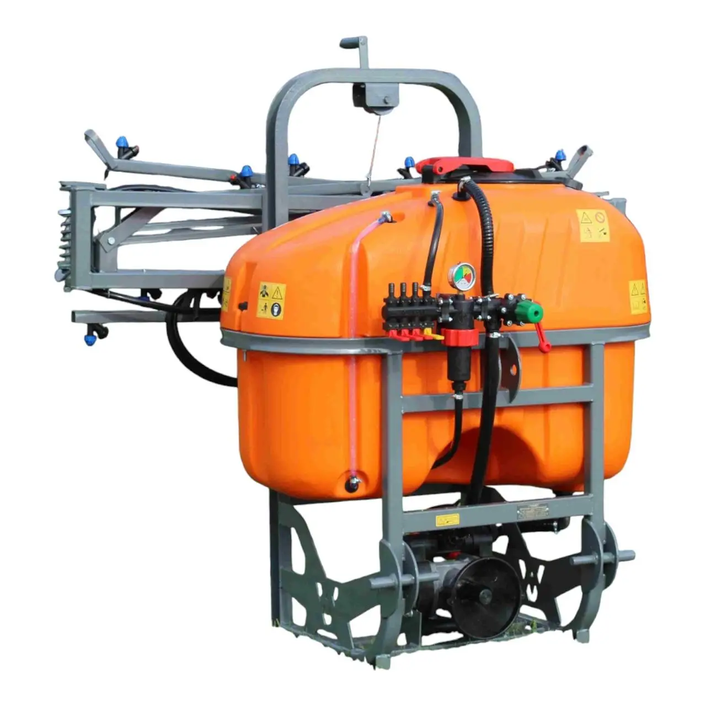
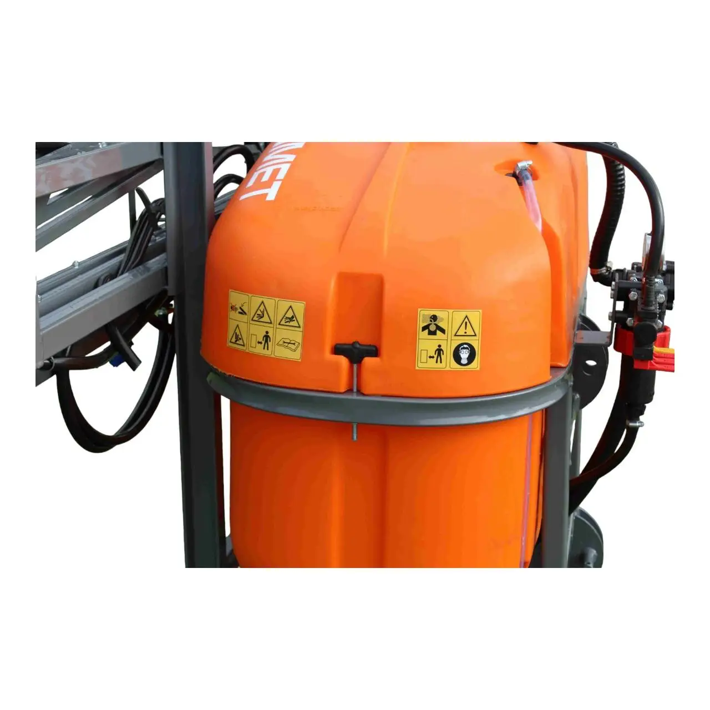
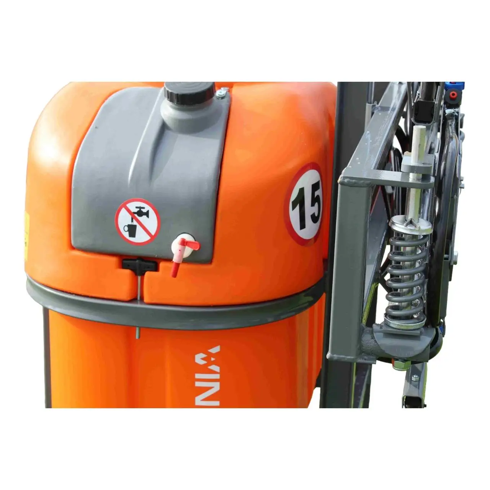
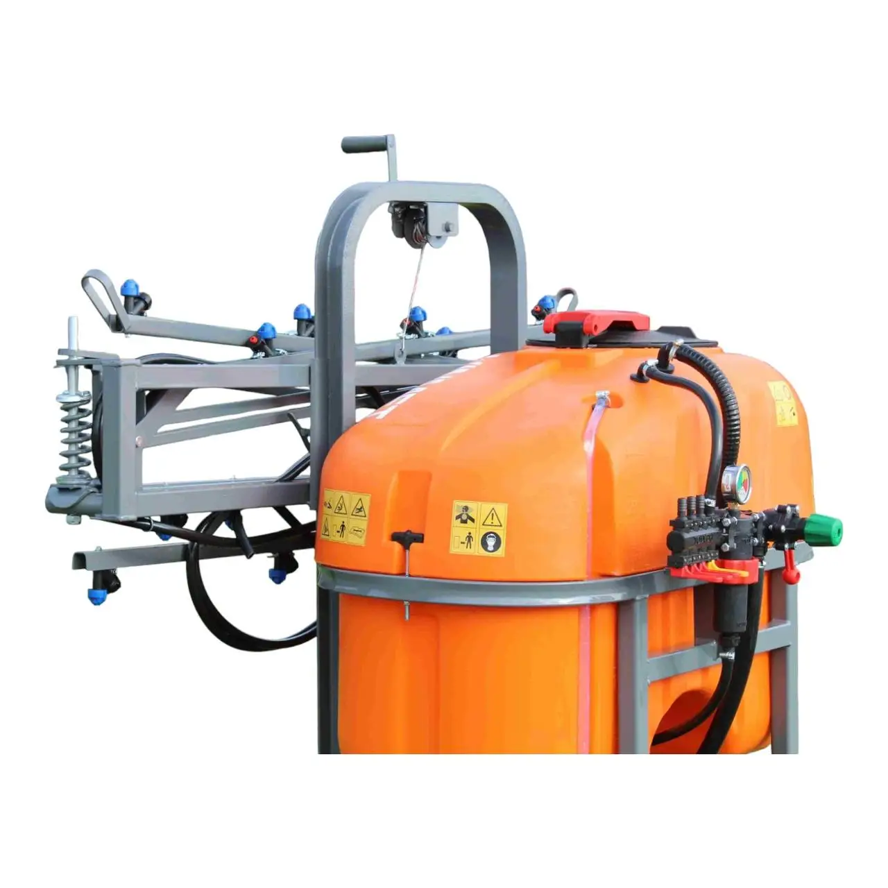

Характеристики:
- Тип обприскувача: Навісний обприскувач
- Об'єм резервуара: 4000 літрів
- Ширина обробки: 12 метрів
- Двигун: 4-циліндровий, дизельний, потужністю 100-150 к.с. (залежно від комплектації)
- Тип охолодження: Водяне рідинне охолодження
- Гідравлічна система: Є, з можливістю підключення до трактора
- Тиск робочий: 0.2-0.4 Мпа
- Паливний бак: 150-200 літрів (залежно від комплектації)
- Максимальна швидкість: до 15 км/год
- Витрата рідини: 50-200 літрів на гектар (залежить від культури та умов обробки)
- Регулювання роботи: Автоматичне регулювання тиску та витрати
- Кабіна: Немає, обприскувач управляється з трактора
- Системи фільтрації: Наявність фільтрів для пального та обприскувальної рідини
- Тип форсунок: Керамічні або латунні (залежно від комплектації)
- Габарити: 4000 x 2500 x 2500 мм (залежно від модифікацій)
- Вага: приблизно 700-1000 кг (залежно від комплектації)
- Матеріал рамки: Сталева / алюмінієва конструкція для підвищеної міцності
Про товар:
Обприскувач «ОП-400/12» штанговий, призначений для обробки польових культур, у тому числі оброблюваних за інтенсивною технологією, пестицидами, гербіцидами тощо, а також внесення рідких комплексних добрив шляхом їх поверхневого обприскування. Обприскувач агрегатується з трактором від 18 л.с, обладнаним коробкою та валом відбору потужності.
Вартість оренди: 300 UAH за день